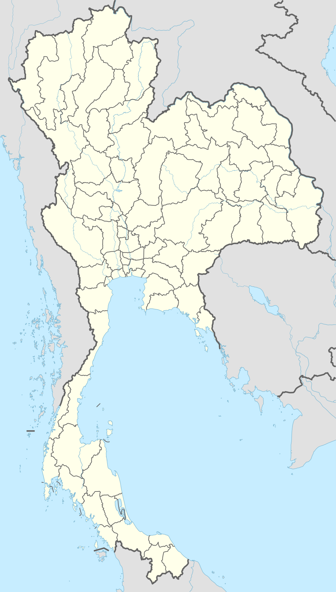

Overview
Thailand Facility Explorer is a web application that allows users to explore educational institutions and medical facilities across Thailand.
Users can view location details, facility summary statistics, and filter information by province and district.

Schools
-
Triam Udom Suksa School
- Province: Bangkok
- District: Pathum Wan
- Type: High School
-
Debsirin School
- Province: Bangkok
- District: Wat Thepsirintharawat
- Type: Secondary School, High School
-
Assumption College
- Province: Bangkok
- District: Bang Rak
- Type: Primary School, Secondary School, High School
-
Suankularb Wittayalai School
- Province: Bangkok
- District: Phra Nakhon
- Type: Secondary School, High School
-
Unity Concord International School
- Province: Chiang Mai
- District: Lampang
- Type: International School
Hospitals
- King Chulalongkorn Memorial Hospital
- King Chulalongkorn Memorial Hospital is a public general and tertiary referral hospital in Bangkok, Thailand. It is operated by the Thai Red Cross Society, and serves as the teaching hospital for the Faculty of Medicine, Chulalongkorn University and Srisavarindhira Thai Red Cross Institute of Nursing.
- Bangkok Hospital
- Founded in 1972, Bangkok Hospital is the flagship of BDMS(Bangkok Dusit Medical Services) — Thailand's largest private hospital network with 58 hospitals and 8,400+ beds nationwide. The main hospital has 550 beds, 77 ICU beds, and serves over one million patients annually. It's been ranked among Thailand's best hospitals for three consecutive years by Newsweek.
- Bumrungrad International Hospital
- Bumrungrad is the big name in Thai medical tourism. Southeast Asia's largest private hospital, it treats over 1.1 million patients annually — with more than 520,000 coming from 190+ countries. The hospital was the first in Asia to receive JCI accreditation in 2002 and has been named to Newsweek's World's Best Hospitals list for five consecutive years (ranked 100th globally in 2025).
- Samitivej Hospital
- Samitivej is the go-to hospital for Bangkok's expat families. Founded in 1979 and also part of BDMS, it was the first hospital in Thailand to be certified as "mother-and-baby-friendly" by WHO and UNICEF. The Sukhumvit branch has 275 beds, 400+ specialists, and a dedicated international children's hospital — the only one in Thailand.
- BNH Hospital
- BNH (Bangkok Nursing Home) is Thailand's oldest international private hospital, founded in 1898 by the British community. While the name sounds quaint, don't let it fool you — this is a modern, JCI-accredited facility with 120 beds and state-of-the-art diagnostic equipment. It's been serving the expat community for over 125 years.
Facility Summary
| Facility Type | Number of Facilities | Province | Location Accuracy |
|---|---|---|---|
| School | 5 | Bangkok | Exact coordinates |
| Hospital | 3 | Bangkok | Subdistrict only |
How accurate are the locations?
School records contain precise latitude and longitude coordinates. Hospital records currently contain only subdistrict information.